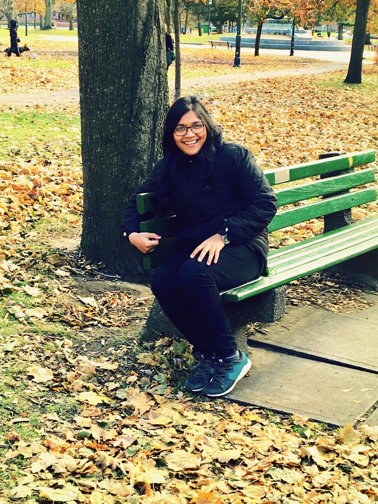

Welcome to my webpage!
I am a fourth year PhD candidate in the Department of Pure Mathematics
at the University of Waterloo where I am a member of the
Geometry and Topology group.
My main research interests are in gauge theory and G2 geometry. Broadly, I am interested in differential geometry, geometric analysis and metrics with special holonomy.
I am working in the joint supervision of Benoit Charbonneau and Spiro Karigiannis.
Before coming to Waterloo, I completed my Masters at Imperial College London where I worked with André Arroja Neves
and Bachelors from the Indian Institute of Technology, Kanpur where my undergraduate thesis was with Aparna Dar.
Here is the most current version of my Curriculum Vitae.
Contact information
Office : MC 5412
Phone : 519-888-4567 ext. 36249
Department of Pure Mathematics
University of Waterloo
200 University Avenue West
Waterloo, ON N2L 3G1
